Investigating the Etiology of Low Infant Birth Weight: An Exploration of Risk Factors
Author
Adithya Parupudi
Published
May 21, 2023
Description
The birthwt dataset(part of the MASS package) is a widely-used data collection in the field of medical statistics and public health research, focusing on the factors influencing birth weight in newborns. It contains records of various factors such as maternal age, weight, race, smoking habits during pregnancy, and the number of prenatal visits, among others. By analyzing the relationships between these variables and birth weight, researchers and medical professionals can identify potential risk factors, better understand the determinants of low birth weight, and develop effective interventions to improve maternal and neonatal health outcomes.
Research Questions
What is the relationship between history of hypertension (ht) and risk of low infant birth weight (low) after controlling for the interaction between uterine irritability(ui) and the number of previous premature labors(ptl)?
How maternal smoking during pregnancy and racial differences influence newborn birth weight, and how it varies over different age groups?
Hypothesis
For research question 1 - A history of hypertension (ht) is positively associated with an increased risk of low infant birth weight (low) along with uterine irritability (ui) and the number of previous premature labors (ptl)
For research question 2 - A history of maternal smoking(smoke) during pregnancy and a mother’s race(race) is positively associated with an increased newborn birth weight(low).
Descriptive Statistics
The birthwt data frame has 189 rows and 10 columns. The data were collected at Baystate Medical Center, Springfield, Mass during 1986.
low: an indicator of birth weight less than 2.5 kg.
age: mother’s age in years.
lwt: mother’s weight in pounds at last menstrual period.
ftv: number of physician visits during the first trimester.
bwt: birth weight in grams.
Facorising the dataset
Some columns in the dataset are categorical but still are shown as integers. So converting them to factors and defining levels to columns wherever applicable. Here, age and lwt are continuous, but for analysis purposes, I’ve categorised them into ordinal categories.
Code
birthwt_new = birthwt# converting birthwt to factorsbirthwt$low <-factor(birthwt$low, levels =c(0,1), labels =c("No", "Yes"))birthwt$race <-factor(birthwt$race, levels =c(1:3), labels=c("white","black","other"))birthwt$smoke <-factor(birthwt$smoke, levels =c(0,1), labels =c("No", "Yes"))birthwt$ht <-factor(birthwt$ht, levels =c(0,1), labels =c("No", "Yes"))birthwt$ui <-factor(birthwt$ui, levels =c(0,1),labels =c("No", "Yes"))birthwt$ptl <-factor(birthwt$ptl)birthwt$ftv <-factor(birthwt$ftv)# Convert age to ordinal categorical variable with 4 levelsbirthwt <- birthwt %>%mutate(age =case_when( age <20~"<20", age >=20& age <=30~"20-30", age >30& age <=40~"30-40", age >40~">40" ))birthwt$age <-factor(birthwt$age,levels =c("<20", "20-30","30-40", ">40"), ordered =TRUE)birthwt <- birthwt %>%mutate(lwt =case_when( lwt <120~"<120", lwt >=120& lwt <=150~"120-150", lwt >150~">150" ))birthwt$lwt <-factor(birthwt$lwt, levels =c("<120", "120-150", ">150"), ordered =TRUE)str(birthwt)
ggplot1 <-ggplot(data =data.frame(table(birthwt$race)), aes(x = Var1, y = Freq, fill = Var1)) +geom_bar(stat ="identity") +geom_text(aes(label = Freq), vjust =-0.5) +xlab("Race") +ylab("Frequency")+labs(fill ="Race")ggplot2 <-ggplot(data =data.frame(table(birthwt$ht)), aes(x = Var1, y = Freq, fill = Var1)) +geom_bar(stat ="identity") +geom_text(aes(label = Freq), vjust =-0.5) +xlab("Hypertension State") +ylab("Frequency") +labs(fill ="Hypertension")ggplot3 <-ggplot(data =data.frame(table(birthwt$ui)), aes(x = Var1, y = Freq, fill = Var1)) +geom_bar(stat ="identity") +geom_text(aes(label = Freq), vjust =-0.5) +xlab("Uterine Irritability") +ylab("Frequency")+labs(fill ="Uterine Irritability")ggplot4 <-ggplot(data =data.frame(table(birthwt$ptl)), aes(x = Var1, y = Freq, fill = Var1)) +geom_bar(stat ="identity") +geom_text(aes(label = Freq), vjust =-0.5) +xlab("Previous Premature Labors") +ylab("Frequency")+labs(fill ="Premature Labors")ggplot5 <-ggplot(data =data.frame(table(birthwt$smoke)), aes(x = Var1, y = Freq, fill = Var1)) +geom_bar(stat ="identity") +geom_text(aes(label = Freq), vjust =-0.5) +xlab("Smoking Status") +ylab("Frequency")+labs(fill ="Smoking Status")ggplot6 <-ggplot(data =data.frame(table(birthwt$low)), aes(x = Var1, y = Freq, fill = Var1)) +geom_bar(stat ="identity") +geom_text(aes(label = Freq), vjust =-0.5) +xlab("Low bwt") +ylab("Frequency")+labs(fill ="<2.5kg")ggplot7 <-ggplot(data =data.frame(table(birthwt$ftv)), aes(x = Var1, y = Freq, fill = Var1)) +geom_bar(stat ="identity") +geom_text(aes(label = Freq), vjust =-0.5) +xlab("Frequenct of physician visits") +ylab("Frequency")+labs(fill ="Visits")# Arrange the ggplot objects in a grid with different colorsarranged =grid.arrange(ggplot1 +scale_fill_brewer(palette ="Set2"), ggplot2 +scale_fill_brewer(palette ="Pastel1"), ggplot3 +scale_fill_brewer(palette ="Set3"), ggplot4 +scale_fill_brewer(palette ="Accent"), ggplot5 +scale_fill_brewer(palette ="Pastel2"), ggplot6 +scale_fill_brewer(palette ="Pastel1"), ggplot7 +scale_fill_brewer(palette ="Pastel2"),ncol =2)
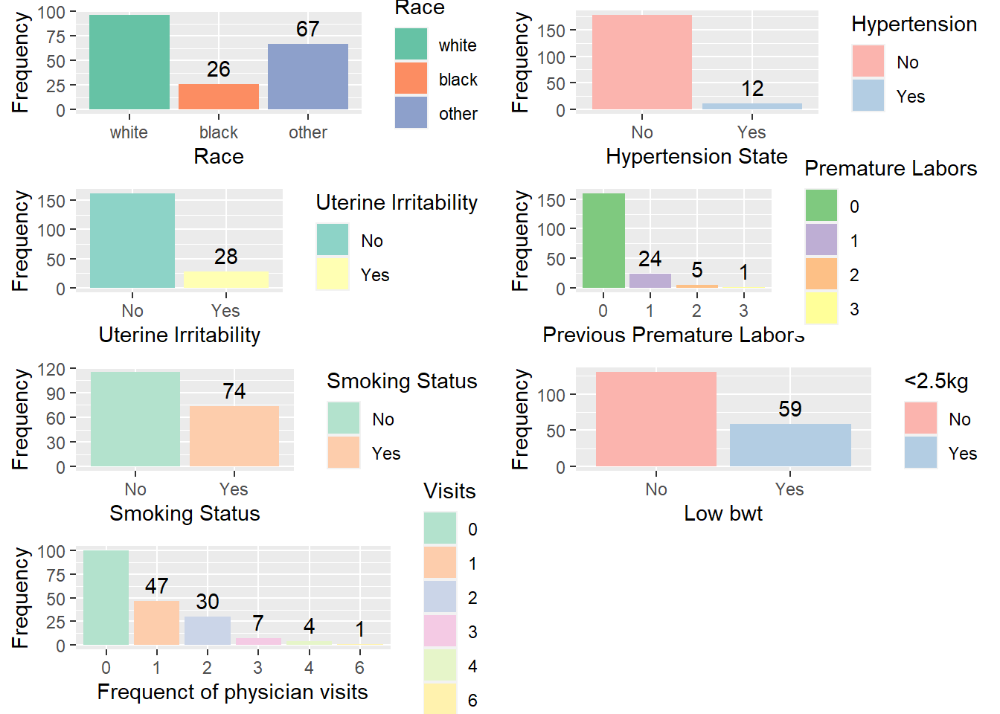
Checking association between variables
Histogram of Birth Weight
This plot is a histogram of the birth weights (x-axis) in the dataset, showing the frequency (y-axis) of the birth weights within specific intervals (bins). The histogram roughly looks like a bell-curve with a peak from 2500-3500 grams. There are fewer cases of low birth weight in bwt less than 2000 grams and greater than 4000 grams. The majority count is between weight ranges of 2500-2500 grams. There are still quite a few cases of low birthweight(less than 2500 grams), but the count of healthy baby weight is more.
Code
ggplot(birthwt, aes(x = bwt)) +geom_histogram(binwidth =100, fill ="steelblue", color ="black") +labs(title ="Histogram of Birth Weight",x ="Birth Weight (grams)",y ="Frequency") +theme_minimal()
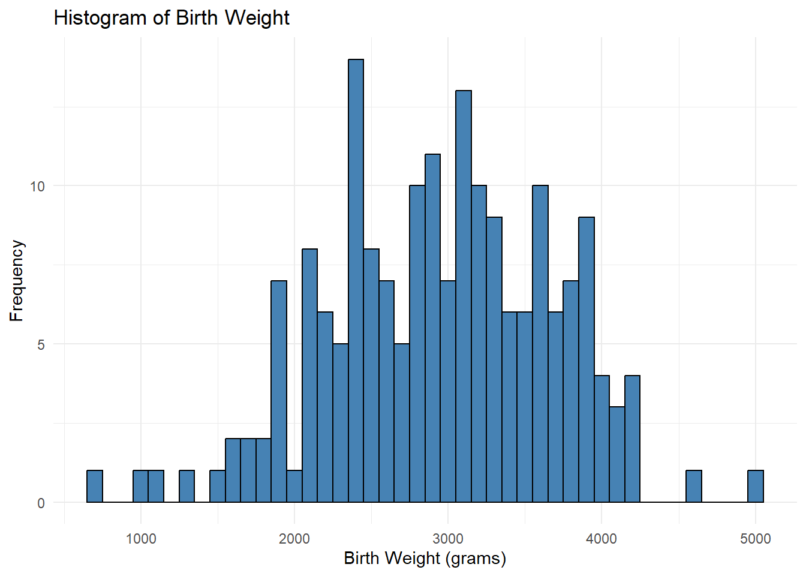
Box plot of Birth Weight by Race
This plot shows the distribution of birth weights (y-axis) across three racial categories (x-axis): White (1), Black (2), and Other (3). From the box plot we can see that there are more mothers belonging to ‘white’ race, followed by ‘other’ and ‘black’ races. There is one outlier each observed for race - black and other. The highest birthweight of ~5000grams is observed in white mothers, followed by ~4000 grams in other race mothers, with the black mothers having their child’s birthwt just below 4000 grams. The lowest birthwt of ~1000 grams is observed for white mothers.
Code
ggplot(birthwt, aes(x =factor(race), y = bwt, fill =factor(race))) +geom_boxplot() +scale_fill_manual(values =c("white", "Turquoise", "orange"), labels =c("White", "Black", "Other")) +labs(title ="Box plot of Birth Weight by Race",x ="Race (1 = White, 2 = Black, 3 = Other)",y ="Birth Weight (grams)",fill ="Race") +theme_minimal()
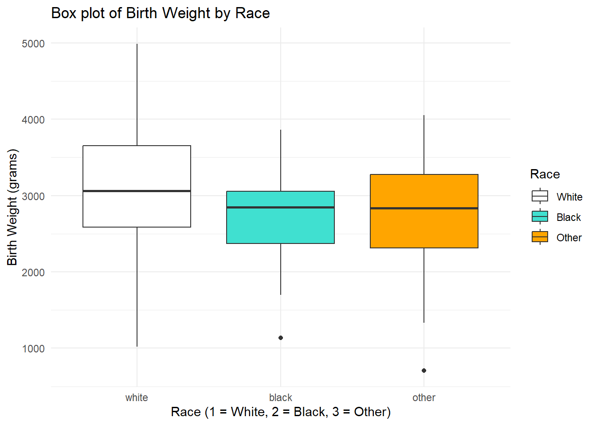
Hypothesis Testing
The response variable is - low
The explanatory variables of interest are are - (ht, ui, ptl), (smoke, race, age)
Correlation plot
I’ve created a correlation plot for all the variables to see the strength of association between various predictor variables w.r.t response variable(low). Here, darker colors reflect stronger association and vice versa.
The coefficients in the model indicate the following associations:
The intercept (-1.3106) represents the estimated log-odds of low birth weight when all predictor variables are zero.
The coefficient for htYes (1.4243) suggests that having a history of hypertension is associated with a statistically significant increase in the log-odds of low birth weight.
The coefficient for uiYes (1.0150) indicates that uterine irritability is also associated with a statistically significant increase in the log-odds of low birth weight.
The coefficients for ptl1 (1.6851), ptl2 (0.4778), and ptl3 (-14.2705) represent the associations between the number of previous premature labors and the log-odds of low birth weight. However, it is important to note that the coefficient for ptl3 is not statistically significant and has a large standard error, suggesting uncertainty in its estimation.
Code
model1 <-glm(low ~ ht + ui + ptl, data = birthwt, family = binomial)summary(model1)
Call:
glm(formula = low ~ ht + ui + ptl, family = binomial, data = birthwt)
Deviance Residuals:
Min 1Q Median 3Q Max
-1.796 -0.691 -0.691 1.023 1.760
Coefficients:
Estimate Std. Error z value Pr(>|z|)
(Intercept) -1.3106 0.2097 -6.251 4.08e-10 ***
htYes 1.4243 0.6365 2.238 0.025231 *
uiYes 1.0150 0.4529 2.241 0.025016 *
ptl1 1.6851 0.4824 3.493 0.000478 ***
ptl2 0.4778 0.9680 0.494 0.621605
ptl3 -14.2705 882.7435 -0.016 0.987102
---
Signif. codes: 0 '***' 0.001 '**' 0.01 '*' 0.05 '.' 0.1 ' ' 1
(Dispersion parameter for binomial family taken to be 1)
Null deviance: 234.67 on 188 degrees of freedom
Residual deviance: 209.90 on 183 degrees of freedom
AIC: 221.9
Number of Fisher Scoring iterations: 13
Testing 2nd hypothesis
The coefficient for smokeYes (1.1403) reveals a statistically significant positive association between maternal smoking during pregnancy and the log-odds of low birth weight. This suggests that pregnant mothers who smoke are at an increased risk of having infants with low birth weight compared to non-smokers.
Regarding the mother’s age, the coefficients for age.L (-8.6511), age.Q (-6.1372), and age.C (-2.1288) represent the associations with different age levels. However, none of these coefficients are statistically significant, indicating that the mother’s age, as captured in this model, does not significantly impact the log-odds of low birth weight.
On the other hand, the coefficient for raceblack (1.0951) indicates a statistically significant positive association between being of black race and the log-odds of low birth weight. Similarly, the coefficient for raceother (1.0425) suggests a statistically significant positive association with being of another race. This implies that infants born to mothers of black or other races have a higher likelihood of low birth weight compared to those born to mothers of different racial backgrounds.
Code
model2 <-glm(low ~ smoke + age + race, data = birthwt, family = binomial)summary(model2)
Call:
glm(formula = low ~ smoke + age + race, family = binomial, data = birthwt)
Deviance Residuals:
Min 1Q Median 3Q Max
-1.4370 -0.9352 -0.5946 1.3970 2.0657
Coefficients:
Estimate Std. Error z value Pr(>|z|)
(Intercept) -5.2181 220.6861 -0.024 0.98114
smokeYes 1.1403 0.3750 3.041 0.00236 **
age.L -8.6511 592.1624 -0.015 0.98834
age.Q -6.1372 441.3719 -0.014 0.98891
age.C -2.1288 197.3880 -0.011 0.99140
raceblack 1.0951 0.4973 2.202 0.02766 *
raceother 1.0425 0.4048 2.576 0.01001 *
---
Signif. codes: 0 '***' 0.001 '**' 0.01 '*' 0.05 '.' 0.1 ' ' 1
(Dispersion parameter for binomial family taken to be 1)
Null deviance: 234.67 on 188 degrees of freedom
Residual deviance: 216.77 on 182 degrees of freedom
AIC: 230.77
Number of Fisher Scoring iterations: 13
Model Comparisons
Full model
The full_model includes all the predictors available in the birthwt dataset. The output of the summary shows that none of the predictors have a significant p-value (all are much greater than the typical threshold of 0.05). This suggests that, in this full model, none of the predictors appear to be significantly associated with low birth weight.
The residual deviance is very low (3.8067e-08) compared to the null deviance (234.67), which might indicate that the model is overfitting the data.
Code
full_model =glm(low~. -bwt, data=birthwt, family = binomial )summary(full_model)
In the 1st research question, I have three predictors. Hence, I tried different logistic regression models with different combination of main and interaction effects and compared AIC, BIC scores for each model to see which model is a good git.
Based on the AIC and BIC scores, the logistic model with just the main effects is better than others in predicting the liklihood of low birth weight.
Code
model11 <-glm(low ~ ht + ui + ptl, data = birthwt, family = binomial)model12 <-glm(low ~ ht + ui * ptl, data = birthwt, family = binomial)model13 <-glm(low ~ ht * ui * ptl, data = birthwt, family = binomial)model14 <-glm(low ~ ui * ht + ptl, data = birthwt, family = binomial)model15 <-glm(low ~ ptl * ht + ui, data = birthwt, family = binomial)# comparing modelsAIC(model11, model12, model13, model14, model15)
In the 2nd research question, there are three predictors again. Hence, I tried different logistic regression models with different combination of main and interaction effects and compared AIC, BIC scores for each model to see which model is a good git.
Based on the AIC and BIC scores, the logistic model with just the main effects is better than others in predicting the liklihood of low birth weight.
Code
model21 <-glm(low ~ smoke + age + race, data = birthwt, family = binomial)model22 <-glm(low ~ smoke * age + race, data = birthwt, family = binomial)model23 <-glm(low ~ smoke * age * race, data = birthwt, family = binomial)model24 <-glm(low ~ smoke * race + age, data = birthwt, family = binomial)model25 <-glm(low ~ smoke * race * age, data = birthwt, family = binomial)# summary(model2)AIC(model21, model22, model23, model24, model25)
To compare both finalised models with the full model, I’ve created a stargazer output. We can see the strength of association between response variable(low) with all the predictors in full model and compare the same with the finalised models in both research questions.
Residuals vs Fitted: This looks like a well-fitted model where a roughly horizontal line around the zero residual value
Normal Q-Q: The Normal Q-Q (Quantile-Quantile) plot shows a straight line, it indicates that the residuals in the regression model approximately follow a normal distribution. A straight line in the Q-Q plot means that the observed residuals closely match the expected quantiles of a normal distribution.
Scale-Location: There is one observation at the top of the scale-location plot while the rest of the observations align along a straight line, it suggests the presence of an influential outlier. An influential outlier is an observation that has a significant impact on the regression model, affecting the estimated coefficients and overall model fit.
Residuals vs Leverage: Looks like there are one outlier observation. But it dont appear to be influential.
Code
plot(model11)
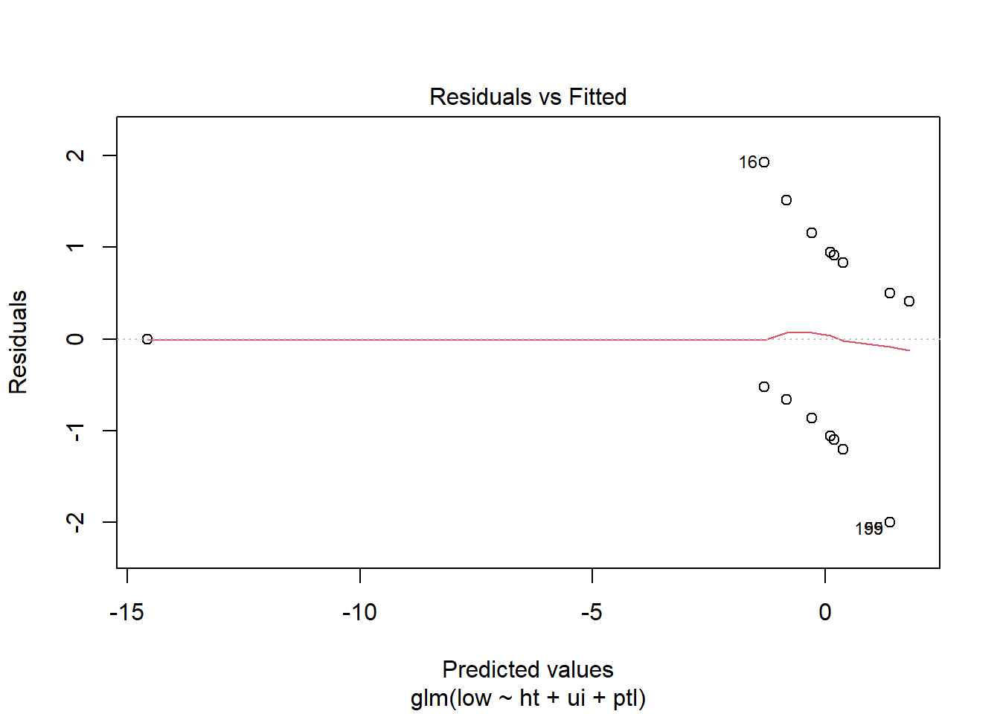
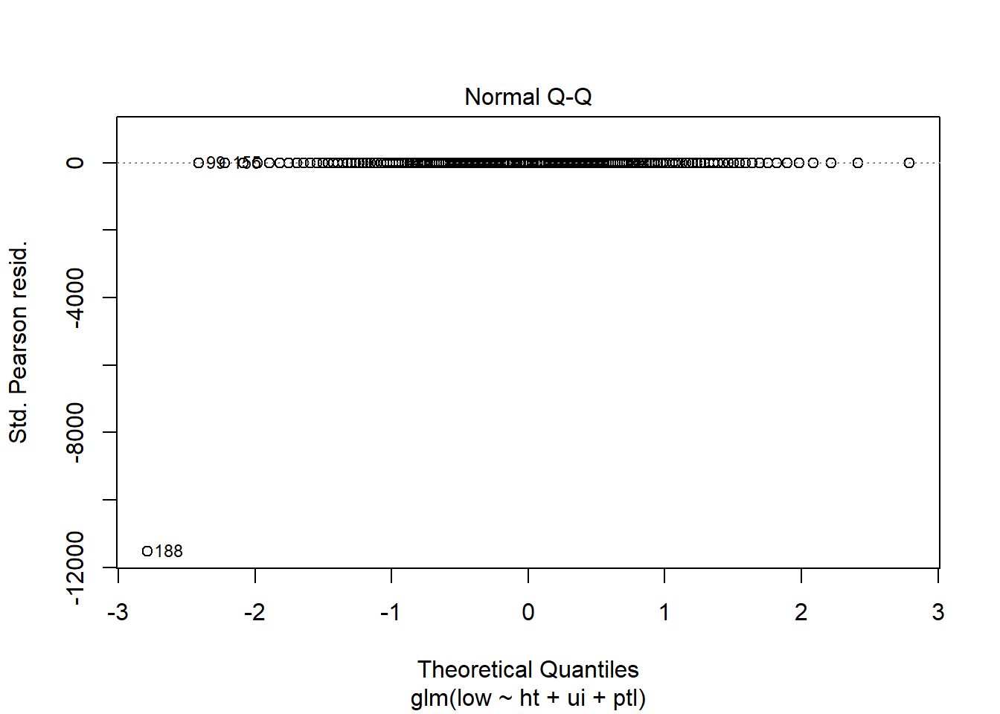
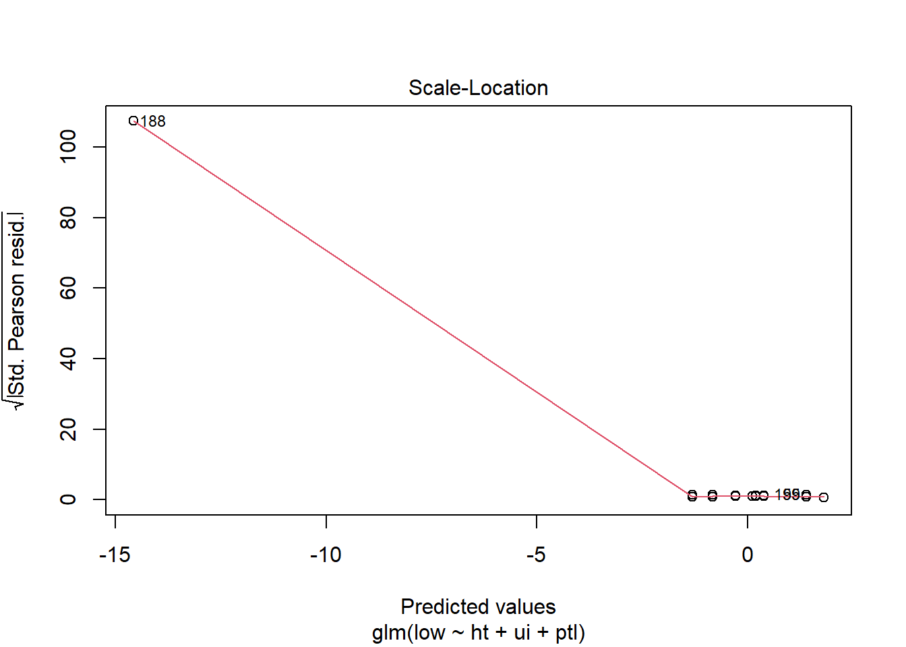
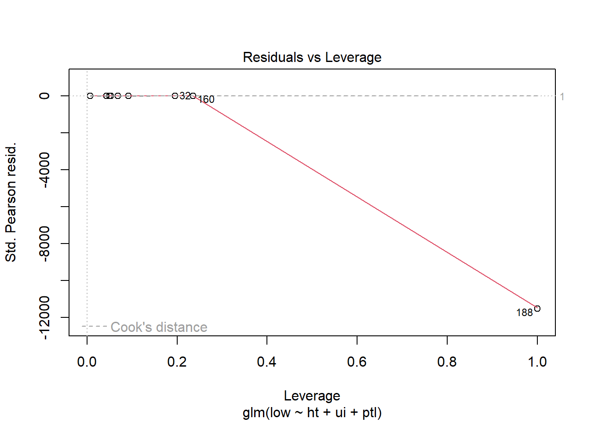
Plotting Model 2
From the plots we can conclude that:
Residuals vs Fitted: A straight line pattern here indicates that the residuals have a constant variance across the range of predicted values, which is indicative of a good fit
Normal Q-Q: The plot closely follow the diagonal line, it indicates that the residuals are normally distributed
Scale-Location: Looks like there is heteroscedasticity.
Residuals vs Leverage: Looks like there are one or two outlier observations. But they dont appear to be influential.
Code
plot(model21)
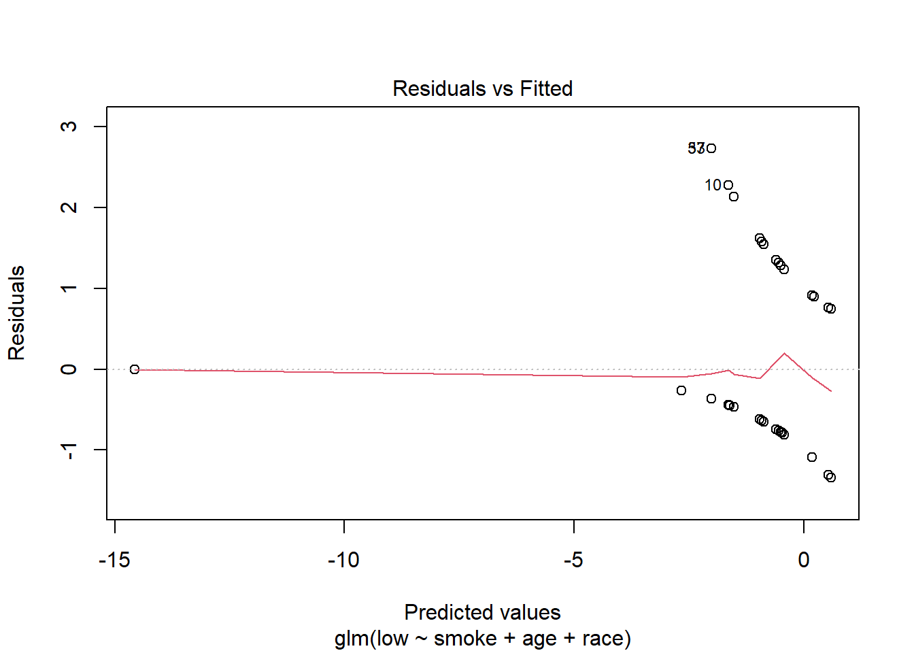
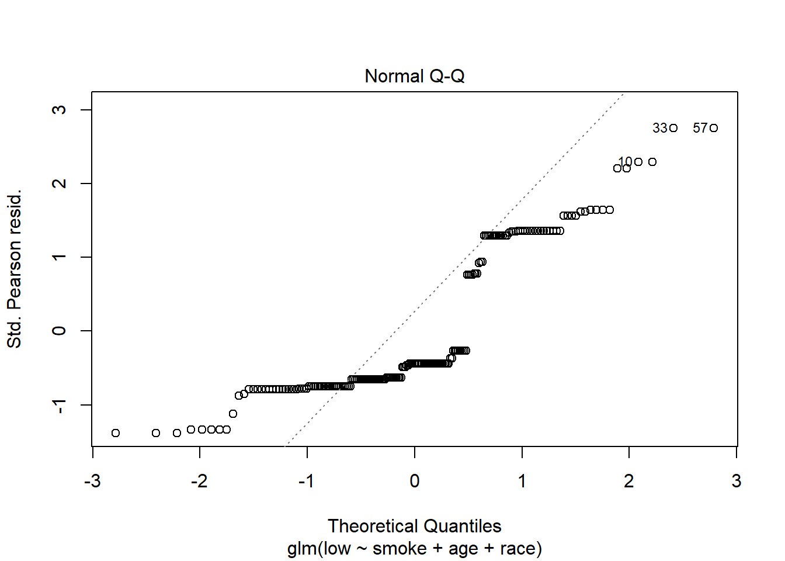
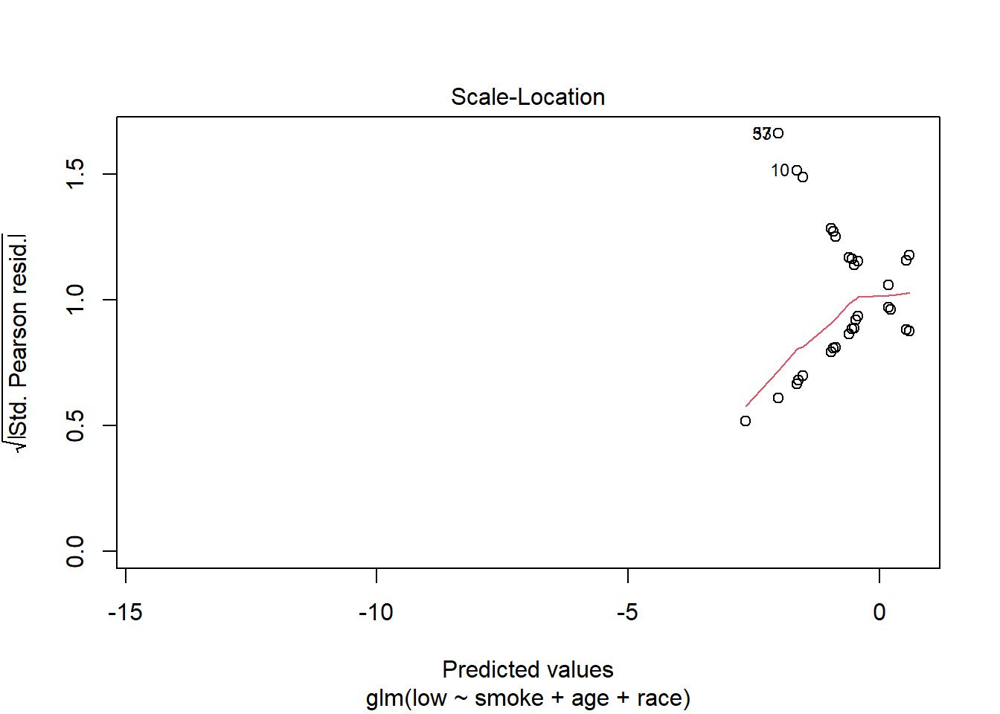
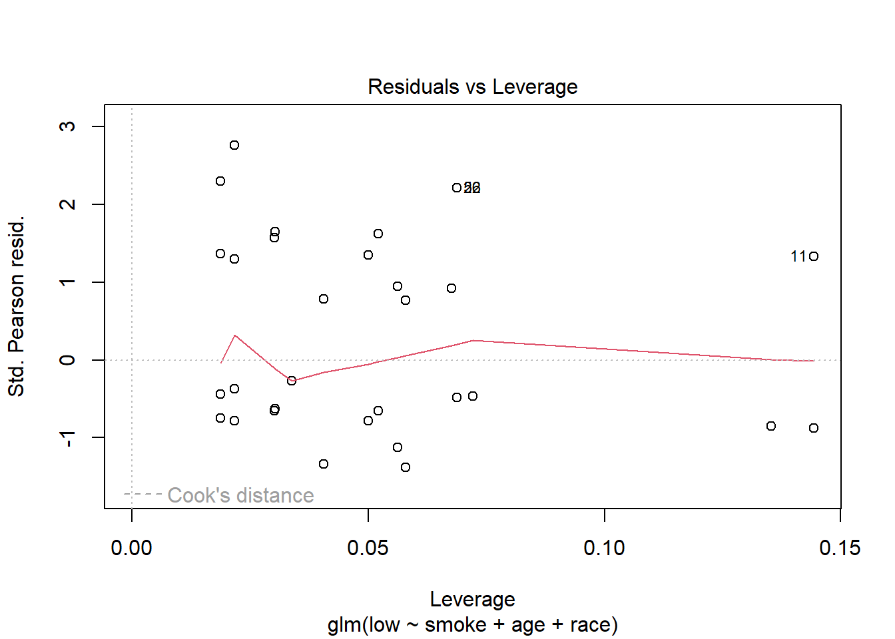
Conclusion
Our investigation leads us to conclude that a mother’s history of hypertension is linked to a higher risk of low birth weight in their child. Furthermore, taking into account the interaction with uterine irritability, the chance of low birth weight is highest when the mother has experienced 0 to 2 prior premature labors. These results are consistent with our original theory.
Our study brings us to draw the conclusion that maternal smoking during pregnancy marginally increases the likelihood of a kid having a low birth weight. Compared to mothers of other races, this effect is slightly stronger for mothers of the black race. Low birth weight is more likely in moms under the age of 30, but it is not significantly different in mothers beyond the age of 40. These results corroborate our hypothesis that there is a link between mother smoking, being black, and a higher risk of having a baby that is underweight.
Future Scope
In future analysis, I want to incorporate additional factors such as parental education level, environmental exposure to pollutants, or access to prenatal care, and observe their impact on birth weight.
References
Venables, W. N. and Ripley, B. D. (2002) Modern Applied Statistics with S. Fourth edition. Springer
Source Code
---title: "Final Project - Post 3"author: "Adithya Parupudi"date: "2023-05-21"description: "Investigating the Etiology of Low Infant Birth Weight: An Exploration of Risk Factors"format: html: toc: true code-fold: true code-copy: true code-tools: truecategories: - Adithya Parupudi - finalpart3---```{r setup, include=FALSE}knitr::opts_chunk$set(echo =TRUE)library(tidyverse)library(MASS)library(ggplot2)library(gridExtra)library(stargazer)library(corrplot)library(reshape2)```# DescriptionThe birthwt dataset(part of the MASS package) is a widely-used data collection in the field of medical statistics and public health research, focusing on the factors influencing birth weight in newborns. It contains records of various factors such as maternal age, weight, race, smoking habits during pregnancy, and the number of prenatal visits, among others. By analyzing the relationships between these variables and birth weight, researchers and medical professionals can identify potential risk factors, better understand the determinants of low birth weight, and develop effective interventions to improve maternal and neonatal health outcomes.# Research Questions1. What is the relationship between history of hypertension (ht) and risk of low infant birth weight (low) after controlling for the interaction between uterine irritability(ui) and the number of previous premature labors(ptl)?2. How maternal smoking during pregnancy and racial differences influence newborn birth weight, and how it varies over different age groups?# Hypothesis- For research question 1 - A history of hypertension (ht) is positively associated with an increased risk of low infant birth weight (low) along with uterine irritability (ui) and the number of previous premature labors (ptl)- For research question 2 - A history of maternal smoking(smoke) during pregnancy and a mother's race(race) is positively associated with an increased newborn birth weight(low).# Descriptive StatisticsThe birthwt data frame has 189 rows and 10 columns. The data were collected at Baystate Medical Center, Springfield, Mass during 1986.- low: an indicator of birth weight less than 2.5 kg.- age: mother's age in years.- lwt: mother's weight in pounds at last menstrual period.- race: mother's race (1 = white, 2 = black, 3 = other).- smoke: smoking status during pregnancy.- ptl: number of previous premature labors.- ht: history of hypertension.- ui: presence of uterine irritability.- ftv: number of physician visits during the first trimester.- bwt: birth weight in grams.# Facorising the datasetSome columns in the dataset are categorical but still are shown as integers. So converting them to factors and defining levels to columns wherever applicable. Here, age and lwt are continuous, but for analysis purposes, I've categorised them into ordinal categories.```{r}birthwt_new = birthwt# converting birthwt to factorsbirthwt$low <-factor(birthwt$low, levels =c(0,1), labels =c("No", "Yes"))birthwt$race <-factor(birthwt$race, levels =c(1:3), labels=c("white","black","other"))birthwt$smoke <-factor(birthwt$smoke, levels =c(0,1), labels =c("No", "Yes"))birthwt$ht <-factor(birthwt$ht, levels =c(0,1), labels =c("No", "Yes"))birthwt$ui <-factor(birthwt$ui, levels =c(0,1),labels =c("No", "Yes"))birthwt$ptl <-factor(birthwt$ptl)birthwt$ftv <-factor(birthwt$ftv)# Convert age to ordinal categorical variable with 4 levelsbirthwt <- birthwt %>%mutate(age =case_when( age <20~"<20", age >=20& age <=30~"20-30", age >30& age <=40~"30-40", age >40~">40" ))birthwt$age <-factor(birthwt$age,levels =c("<20", "20-30","30-40", ">40"), ordered =TRUE)birthwt <- birthwt %>%mutate(lwt =case_when( lwt <120~"<120", lwt >=120& lwt <=150~"120-150", lwt >150~">150" ))birthwt$lwt <-factor(birthwt$lwt, levels =c("<120", "120-150", ">150"), ordered =TRUE)str(birthwt)```## General Visualizations```{r}ggplot1 <-ggplot(data =data.frame(table(birthwt$race)), aes(x = Var1, y = Freq, fill = Var1)) +geom_bar(stat ="identity") +geom_text(aes(label = Freq), vjust =-0.5) +xlab("Race") +ylab("Frequency")+labs(fill ="Race")ggplot2 <-ggplot(data =data.frame(table(birthwt$ht)), aes(x = Var1, y = Freq, fill = Var1)) +geom_bar(stat ="identity") +geom_text(aes(label = Freq), vjust =-0.5) +xlab("Hypertension State") +ylab("Frequency") +labs(fill ="Hypertension")ggplot3 <-ggplot(data =data.frame(table(birthwt$ui)), aes(x = Var1, y = Freq, fill = Var1)) +geom_bar(stat ="identity") +geom_text(aes(label = Freq), vjust =-0.5) +xlab("Uterine Irritability") +ylab("Frequency")+labs(fill ="Uterine Irritability")ggplot4 <-ggplot(data =data.frame(table(birthwt$ptl)), aes(x = Var1, y = Freq, fill = Var1)) +geom_bar(stat ="identity") +geom_text(aes(label = Freq), vjust =-0.5) +xlab("Previous Premature Labors") +ylab("Frequency")+labs(fill ="Premature Labors")ggplot5 <-ggplot(data =data.frame(table(birthwt$smoke)), aes(x = Var1, y = Freq, fill = Var1)) +geom_bar(stat ="identity") +geom_text(aes(label = Freq), vjust =-0.5) +xlab("Smoking Status") +ylab("Frequency")+labs(fill ="Smoking Status")ggplot6 <-ggplot(data =data.frame(table(birthwt$low)), aes(x = Var1, y = Freq, fill = Var1)) +geom_bar(stat ="identity") +geom_text(aes(label = Freq), vjust =-0.5) +xlab("Low bwt") +ylab("Frequency")+labs(fill ="<2.5kg")ggplot7 <-ggplot(data =data.frame(table(birthwt$ftv)), aes(x = Var1, y = Freq, fill = Var1)) +geom_bar(stat ="identity") +geom_text(aes(label = Freq), vjust =-0.5) +xlab("Frequenct of physician visits") +ylab("Frequency")+labs(fill ="Visits")# Arrange the ggplot objects in a grid with different colorsarranged =grid.arrange(ggplot1 +scale_fill_brewer(palette ="Set2"), ggplot2 +scale_fill_brewer(palette ="Pastel1"), ggplot3 +scale_fill_brewer(palette ="Set3"), ggplot4 +scale_fill_brewer(palette ="Accent"), ggplot5 +scale_fill_brewer(palette ="Pastel2"), ggplot6 +scale_fill_brewer(palette ="Pastel1"), ggplot7 +scale_fill_brewer(palette ="Pastel2"),ncol =2)```## Checking association between variables### Histogram of Birth WeightThis plot is a histogram of the birth weights (x-axis) in the dataset, showing the frequency (y-axis) of the birth weights within specific intervals (bins). The histogram roughly looks like a bell-curve with a peak from 2500-3500 grams. There are fewer cases of low birth weight in bwt less than 2000 grams and greater than 4000 grams. The majority count is between weight ranges of 2500-2500 grams. There are still quite a few cases of low birthweight(less than 2500 grams), but the count of healthy baby weight is more.```{r}ggplot(birthwt, aes(x = bwt)) +geom_histogram(binwidth =100, fill ="steelblue", color ="black") +labs(title ="Histogram of Birth Weight",x ="Birth Weight (grams)",y ="Frequency") +theme_minimal()```### Box plot of Birth Weight by RaceThis plot shows the distribution of birth weights (y-axis) across three racial categories (x-axis): White (1), Black (2), and Other (3). From the box plot we can see that there are more mothers belonging to 'white' race, followed by 'other' and 'black' races. There is one outlier each observed for race - black and other. The highest birthweight of \~5000grams is observed in white mothers, followed by \~4000 grams in other race mothers, with the black mothers having their child's birthwt just below 4000 grams. The lowest birthwt of \~1000 grams is observed for white mothers.```{r}ggplot(birthwt, aes(x =factor(race), y = bwt, fill =factor(race))) +geom_boxplot() +scale_fill_manual(values =c("white", "Turquoise", "orange"), labels =c("White", "Black", "Other")) +labs(title ="Box plot of Birth Weight by Race",x ="Race (1 = White, 2 = Black, 3 = Other)",y ="Birth Weight (grams)",fill ="Race") +theme_minimal()```# Hypothesis Testing- The response variable is - ***low***- The explanatory variables of interest are are - (***ht, ui, ptl), (smoke, race, age)***## Correlation plotI've created a correlation plot for all the variables to see the strength of association between various predictor variables w.r.t response variable(low). Here, darker colors reflect stronger association and vice versa.```{r}round(cor(birthwt_new), 2) %>%melt() %>%ggplot(aes(x=Var1, y=Var2, fill=abs(value))) +geom_tile() +scale_fill_continuous(type="gradient", low ="skyblue", high ="blue", breaks =c(0,1,0.025)) +geom_text(aes(Var2, Var1, label = value), color ="white", size =4) +labs(x =NULL, y =NULL) +theme(legend.position="none") +ggtitle("Correlation plot") +theme(axis.text.x =element_text(angle =90))```## Testing 1st hypothesisThe coefficients in the model indicate the following associations:- The intercept (-1.3106) represents the estimated log-odds of low birth weight when all predictor variables are zero.- The coefficient for htYes (1.4243) suggests that having a history of hypertension is associated with a statistically significant increase in the log-odds of low birth weight.- The coefficient for uiYes (1.0150) indicates that uterine irritability is also associated with a statistically significant increase in the log-odds of low birth weight.- The coefficients for ptl1 (1.6851), ptl2 (0.4778), and ptl3 (-14.2705) represent the associations between the number of previous premature labors and the log-odds of low birth weight. However, it is important to note that the coefficient for ptl3 is not statistically significant and has a large standard error, suggesting uncertainty in its estimation.```{r}model1 <-glm(low ~ ht + ui + ptl, data = birthwt, family = binomial)summary(model1)```## Testing 2nd hypothesisThe coefficient for smokeYes (1.1403) reveals a statistically significant positive association between maternal smoking during pregnancy and the log-odds of low birth weight. This suggests that pregnant mothers who smoke are at an increased risk of having infants with low birth weight compared to non-smokers.Regarding the mother's age, the coefficients for age.L (-8.6511), age.Q (-6.1372), and age.C (-2.1288) represent the associations with different age levels. However, none of these coefficients are statistically significant, indicating that the mother's age, as captured in this model, does not significantly impact the log-odds of low birth weight.On the other hand, the coefficient for raceblack (1.0951) indicates a statistically significant positive association between being of black race and the log-odds of low birth weight. Similarly, the coefficient for raceother (1.0425) suggests a statistically significant positive association with being of another race. This implies that infants born to mothers of black or other races have a higher likelihood of low birth weight compared to those born to mothers of different racial backgrounds.```{r}model2 <-glm(low ~ smoke + age + race, data = birthwt, family = binomial)summary(model2)```# Model Comparisons## Full modelThe full_model includes all the predictors available in the birthwt dataset. The output of the summary shows that none of the predictors have a significant p-value (all are much greater than the typical threshold of 0.05). This suggests that, in this full model, none of the predictors appear to be significantly associated with low birth weight.The residual deviance is very low (3.8067e-08) compared to the null deviance (234.67), which might indicate that the model is overfitting the data.```{r}full_model =glm(low~. -bwt, data=birthwt, family = binomial )summary(full_model)AIC(full_model)BIC(full_model)```## Comparing varioius logistic models for RQ1In the 1st research question, I have three predictors. Hence, I tried different logistic regression models with different combination of main and interaction effects and compared AIC, BIC scores for each model to see which model is a good git.Based on the AIC and BIC scores, the logistic model with just the main effects is better than others in predicting the liklihood of low birth weight.```{r}model11 <-glm(low ~ ht + ui + ptl, data = birthwt, family = binomial)model12 <-glm(low ~ ht + ui * ptl, data = birthwt, family = binomial)model13 <-glm(low ~ ht * ui * ptl, data = birthwt, family = binomial)model14 <-glm(low ~ ui * ht + ptl, data = birthwt, family = binomial)model15 <-glm(low ~ ptl * ht + ui, data = birthwt, family = binomial)# comparing modelsAIC(model11, model12, model13, model14, model15)BIC(model11, model12, model13, model14, model15)```## Comparing varioius logistic models for RQ2In the 2nd research question, there are three predictors again. Hence, I tried different logistic regression models with different combination of main and interaction effects and compared AIC, BIC scores for each model to see which model is a good git.Based on the AIC and BIC scores, the logistic model with just the main effects is better than others in predicting the liklihood of low birth weight.```{r}model21 <-glm(low ~ smoke + age + race, data = birthwt, family = binomial)model22 <-glm(low ~ smoke * age + race, data = birthwt, family = binomial)model23 <-glm(low ~ smoke * age * race, data = birthwt, family = binomial)model24 <-glm(low ~ smoke * race + age, data = birthwt, family = binomial)model25 <-glm(low ~ smoke * race * age, data = birthwt, family = binomial)# summary(model2)AIC(model21, model22, model23, model24, model25)BIC(model21, model22, model23, model24, model25)```# Stargazer outputTo compare both finalised models with the full model, I've created a stargazer output. We can see the strength of association between response variable(low) with all the predictors in full model and compare the same with the finalised models in both research questions.```{r, warning = FALSE}stargazer(model11, model21, full_model, type="text")```# Diagnostics## Plotting Model 1From the plots we can conclude that:- Residuals vs Fitted: This looks like a well-fitted model where a roughly horizontal line around the zero residual value- Normal Q-Q: The Normal Q-Q (Quantile-Quantile) plot shows a straight line, it indicates that the residuals in the regression model approximately follow a normal distribution. A straight line in the Q-Q plot means that the observed residuals closely match the expected quantiles of a normal distribution.- Scale-Location: There is one observation at the top of the scale-location plot while the rest of the observations align along a straight line, it suggests the presence of an influential outlier. An influential outlier is an observation that has a significant impact on the regression model, affecting the estimated coefficients and overall model fit.- Residuals vs Leverage: Looks like there are one outlier observation. But it dont appear to be influential.```{r, warning=FALSE}plot(model11)```## Plotting Model 2From the plots we can conclude that:- Residuals vs Fitted: A straight line pattern here indicates that the residuals have a constant variance across the range of predicted values, which is indicative of a good fit- Normal Q-Q: The plot closely follow the diagonal line, it indicates that the residuals are normally distributed- Scale-Location: Looks like there is heteroscedasticity.- Residuals vs Leverage: Looks like there are one or two outlier observations. But they dont appear to be influential.```{r, warning=FALSE}plot(model21)```# Conclusion- Our investigation leads us to conclude that a mother's history of hypertension is linked to a higher risk of low birth weight in their child. Furthermore, taking into account the interaction with uterine irritability, the chance of low birth weight is highest when the mother has experienced 0 to 2 prior premature labors. These results are consistent with our original theory.- Our study brings us to draw the conclusion that maternal smoking during pregnancy marginally increases the likelihood of a kid having a low birth weight. Compared to mothers of other races, this effect is slightly stronger for mothers of the black race. Low birth weight is more likely in moms under the age of 30, but it is not significantly different in mothers beyond the age of 40. These results corroborate our hypothesis that there is a link between mother smoking, being black, and a higher risk of having a baby that is underweight.# Future ScopeIn future analysis, I want to incorporate additional factors such as parental education level, environmental exposure to pollutants, or access to prenatal care, and observe their impact on birth weight.# ReferencesVenables, W. N. and Ripley, B. D. (2002) Modern Applied Statistics with S. Fourth edition. Springer